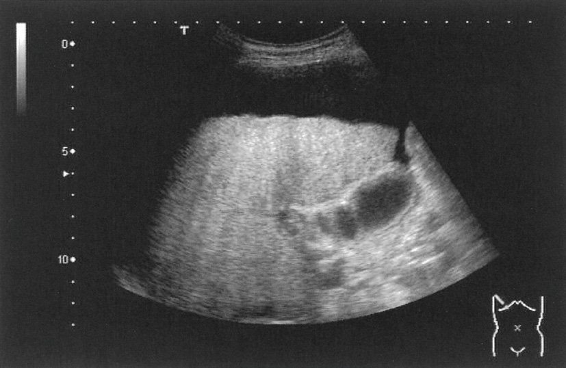
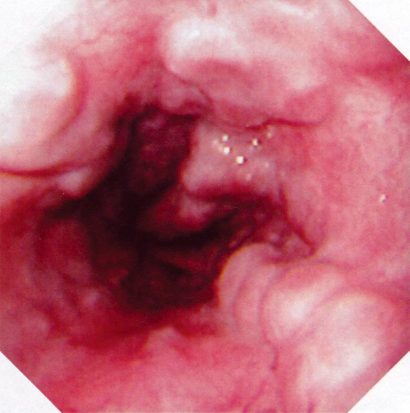
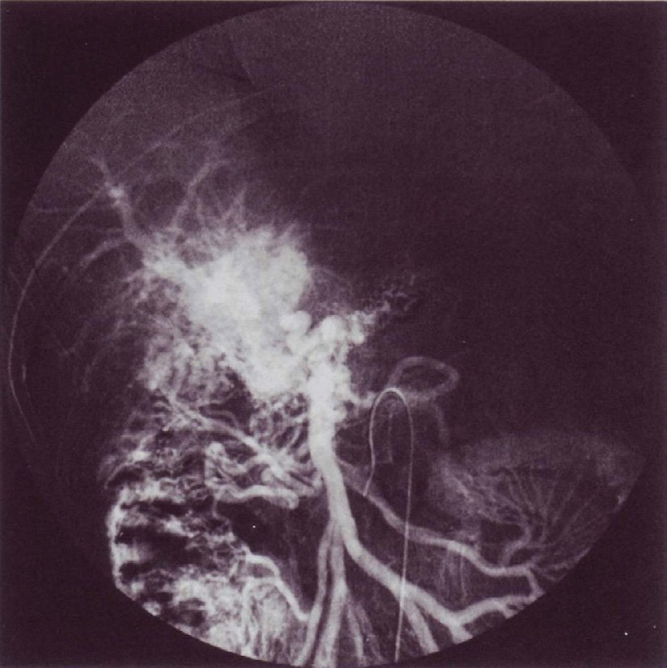
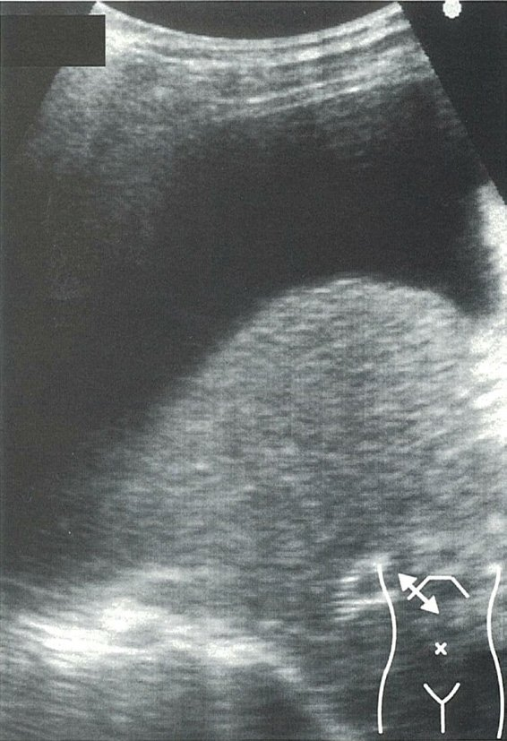
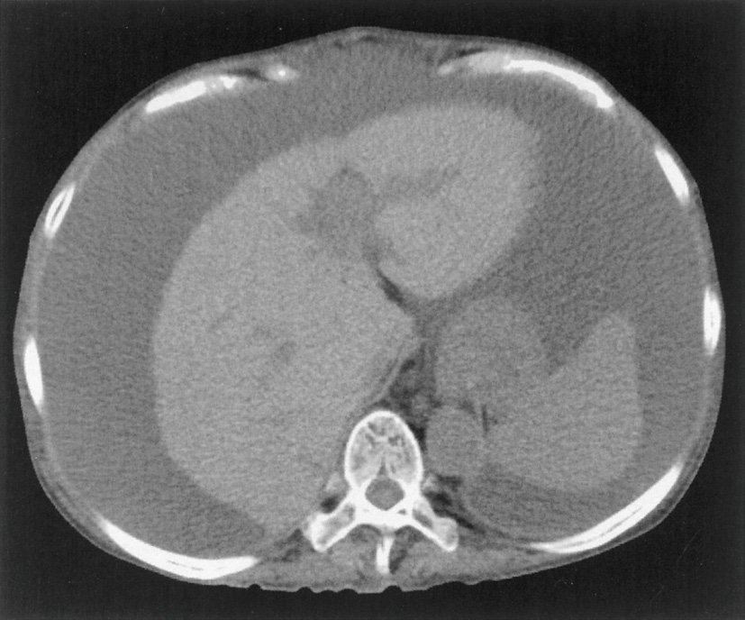
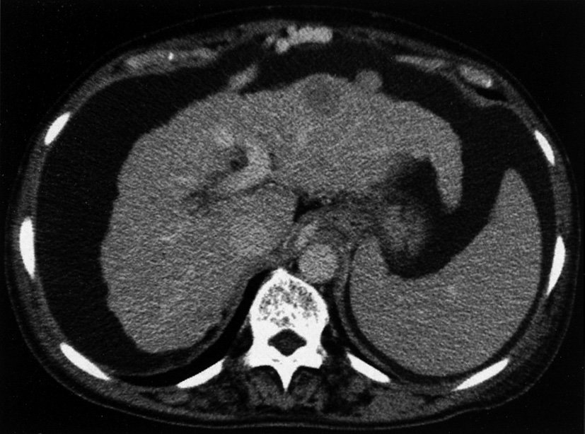
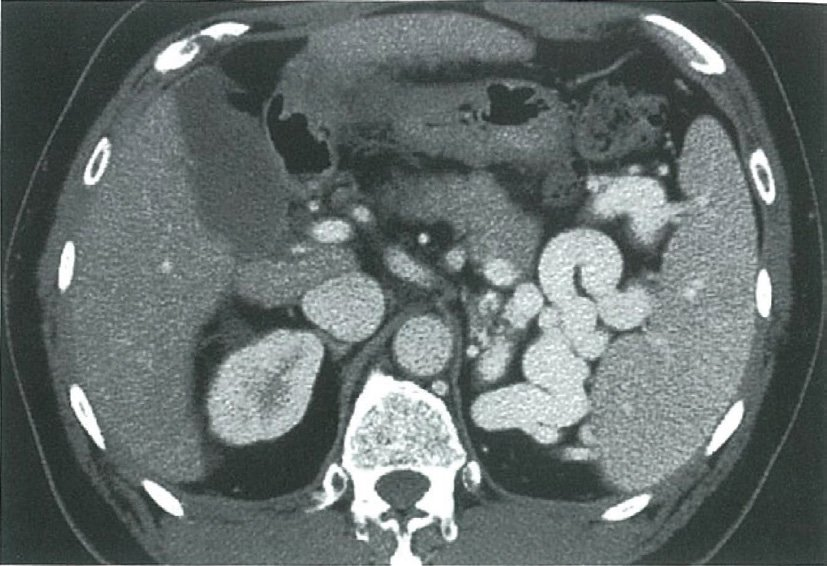
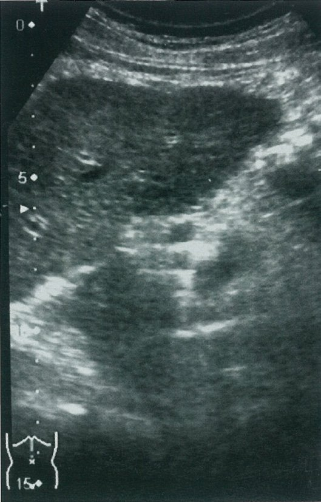
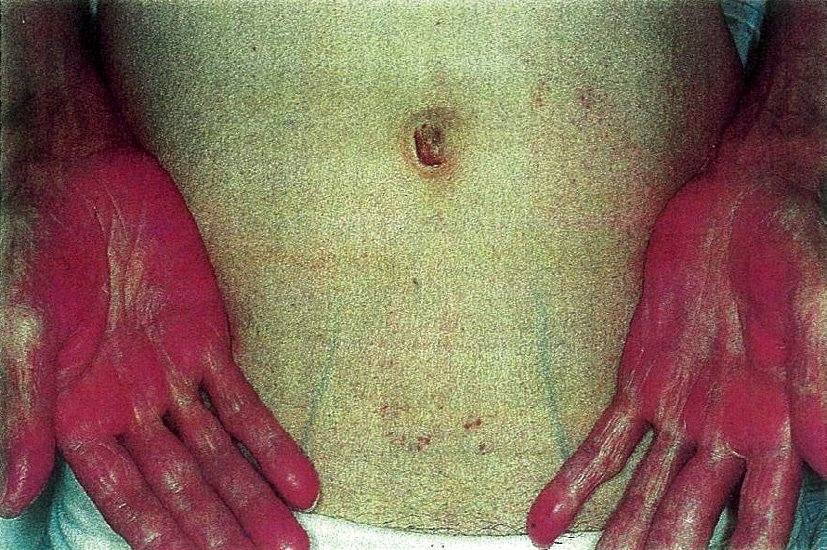

| 治療 | 内容 |
|---|---|
| 塩分制限（6g/日以下） | 第一の治療原則（水分は制限しない） |
| スピロノラクトン（第一選択） | アルドステロン拮抗薬→Na排泄促進 |
| フロセミド | スピロノラクトンに追加（スピロ:フロセミド=100:40mg） |
| 大量腹水穿刺 | 1回に4-6L排液→アルブミン補充（6-8g/L） |
| 安静 | 臥位→腎血流↑→利尿↑ |
| 誘因 | 機序 |
|---|---|
| 便秘 | 腸内NH3産生↑・腸管吸収↑ |
| 消化管出血 | 血液（タンパク質）→腸内NH3産生↑ |
| タンパク過剰摂取 | NH3産生↑ |
| 利尿薬過剰→低K・アルカローシス | NH3の腸管吸収↑ |
| 感染（SBP等） | 全身炎症→肝機能さらに低下 |
| 不適切な高タンパク食 | （制限ではなく適切なタンパク摂取は必要） |
| 脾腫の原因 | 代表疾患 |
|---|---|
| 門脈圧亢進症 | 肝硬変（最多）・Budd-Chiari症候群 |
| 血液疾患 | 白血病・悪性リンパ腫・骨髄線維症・溶血性貧血 |
| 感染症 | 伝染性単核球症（EBV）・マラリア・敗血症 |
| 膠原病 | SLE・関節リウマチ（Felty症候群） |
| 脾腫をきたさないもの | 胃十二指腸潰瘍・虫垂炎・胆石症 |
| 誘因（なる） | 誘因にならない |
|---|---|
| 消化管出血 | ビタミンB12・B1投与 |
| 便秘 | 適切なタンパク摂取（植物性） |
| 低K血症（利尿薬過剰） | |
| 感染（SBP） | |
| 睡眠薬・鎮静薬 |
| 尿中Na | 代表疾患 | |
|---|---|---|
| 尿中Na低下（<20 mEq/L） | Naを保持しながら低Na | 肝硬変・心不全・ネフローゼ症候群・脱水（腎外性） |
| 尿中Na高値（>40 mEq/L） | Naを捨てながら低Na | SIADHl・ADH不適切分泌・腎性塩類喪失 |
| 適応 | 非適応（禁忌） |
|---|---|
| 肝硬変（Child C、MELD≥15） | 転移性肝癌（原則） |
| 劇症肝炎 | 活動性感染症（コントロール不良） |
| PSC・PBC（末期） | アルコール継続（禁酒できない） |
| HCC（Milan基準：単発≤5cm or 3個以内≤3cm） | 肺高血圧症（重症） |
| 代謝性疾患（Wilson・α1-AT欠乏等） |
| 合併症 | 側副路・機序 |
|---|---|
| 食道静脈瘤 | 左胃静脈↔奇静脈→食道下端 |
| 腹壁静脈怒張（Caput medusae） | 臍静脈再開通→腹壁表在静脈 |
| 痔核 | 直腸下静脈↔腸骨静脈（下腸間膜静脈系） |
| 脾腫→脾機能亢進（汎血球減少） | 門脈うっ血→脾腫大 |
| Budd-Chiari症候群 | 肝静脈閉塞→門脈圧亢進（別疾患） |

| 検査 | 変化 | 機序 |
|---|---|---|
| 血小板 | ↓ | 脾機能亢進→血小板破壊↑ |
| 白血球 | ↓ | 脾機能亢進 |
| 赤血球（Hb） | ↓ | 脾機能亢進＋骨髄抑制 |
| アルブミン | ↓ | 肝合成能↓ |
| PT（プロトロンビン時間） | ↑（延長） | 凝固因子合成↓ |
| AST/ALT | 軽〜中等度↑（進行すると正常化） |
| 治療 | 特徴 |
|---|---|
| EVL（内視鏡的静脈瘤結紮術） | 第一選択。輪ゴムで結紮→壊死・脱落 |
| EIS（内視鏡的硬化療法） | 硬化剤注入。現在はEVLが主体 |
| バソプレシン・オクトレオチド | 門脈圧低下（薬物療法） |
| Sengstaken-Blakemore tube | 出血コントロール困難時の一時的止血 |
| TIPS（経頸静脈的肝内門脈大循環短絡術） | 難治例・再出血予防 |
| 避けるべきもの | 理由 |
|---|---|
| 高タンパク食（動物性） | NH3産生↑→脳症悪化 |
| ベンゾジアゼピン系睡眠薬 | GABA受容体感受性↑→脳症悪化 |
| 便秘（放置） | NH3産生↑ |
| 過剰な利尿薬→低K・アルカローシス | NH3腸管吸収↑ |
| 適切なもの | ラクツロース・BCAA・リファキシミン |
| マーカー | 特徴 | 基準値 |
|---|---|---|
| AFP（α-フェトプロテイン） | 感度70%・特異度75%（単独） | <10 ng/mL |
| PIVKA-II | HCCに高特異性・ビタミンK拮抗異常タンパク | <40 mAU/mL |
| AFP-L3分画 | 高悪性度HCCに特異性高（>15%で陽性） | <15% |
| CA19-9 | 胆管癌・膵癌のマーカー（HCCではない） |



| 肝硬変でみられる | 肝硬変でみられない |
|---|---|
| Alb↓・PT延長 | AST/ALT著明↑↑（急性肝炎の所見） |
| 血小板↓（脾機能亢進） | |
| 食道静脈瘤・腹水・脾腫 | |
| クモ状血管腫・手掌紅斑 | |
| 高エストロゲン（女性化乳房・月経異常） |

| 漏出性（肝硬変） | 滲出性（癌性腹膜炎） | |
|---|---|---|
| SAAG | ≥1.1 | <1.1 |
| タンパク | <2.5 g/dL | >3.0 g/dL |
| 比重 | <1.015 | >1.018 |
| Rivalta試験 | 陰性 | 陽性 |
| LDH | 低値 | 高値 |
| 成因 | 割合（現在） | 備考 |
|---|---|---|
| アルコール性 | 最多（約40%） | DAA普及でHCV関連が減少 |
| C型肝炎（HCV） | 約25%（減少中） | DAA治療でSVR増加 |
| B型肝炎（HBV） | 約15% | |
| NAFLD/NASH | 増加中 | 肥満・メタボ増加に伴い |
| 自己免疫性（AIH・PBC） | 約5% |
| Grade | 症状 |
|---|---|
| I | 睡眠障害・集中力低下・軽度の意識混濁 |
| II | 羽ばたき振戦・行動異常・嗜眠（脳症の典型期） |
| III | 傾眠・著明な混乱・昏迷（呼びかけに反応） |
| IV | 昏睡（肝昏睡） |

| 検査 | 高値になる病態 | 低値になる病態 |
|---|---|---|
| 血小板 | 血小板増多症・炎症（反応性） | 肝硬変（脾機能亢進）・血小板減少症 |
| AFP | HCC・急性肝炎（軽度）・妊娠 | |
| NH3（アンモニア） | 肝性脳症・尿素回路異常 | |
| PT（INR） | 肝不全・DIC・Vit K欠乏 |
| 低Na血症の原因 | 尿中Na | 機序 |
|---|---|---|
| 肝硬変 | <20 mEq/L | RAAS↑・ADH↑→Na・水貯留 |
| SIADH（ADH不適切分泌） | >40 mEq/L | ADH過剰→水貯留 |
| 心不全 | <20 mEq/L | 有効循環↓→RAAS↑ |
| ネフローゼ症候群 | <20 mEq/L | Alb↓→有効循環↓ |
| 嘔吐・下痢（脱水） | <20 mEq/L | 細胞外液↓→RAAS↑ |
| 診断基準 | |
|---|---|
| 腹水好中球数≥250/mm³ | 診断基準（感度は高い） |
| 腹水培養陽性 | 確定（陰性でも除外できない） |
| 発熱・腹痛・腹部圧痛 | 臨床症状 |
| 血清Alb－腹水Alb（SAAG） | ≥1.1で漏出性確認 |
| 原因菌 | 大腸菌・肺炎球菌・クレブシエラが多い |
| 上昇するもの | 低下するもの |
|---|---|
| 血清NH3（アンモニア） | 血清アルブミン |
| 血清ビリルビン（T-Bil） | PT活性 |
| 腹水・浮腫 | 血小板 |
| コリンエステラーゼ（ChE） | |
| 血清Zn（亜鉛） |
| 検査 | 目的 | 頻度 |
|---|---|---|
| 腹部超音波＋AFP・PIVKA-II | HCCサーベイランス | 6ヶ月毎（高リスクは3ヶ月毎） |
| 上部消化管内視鏡 | 食道静脈瘤の有無・重症度 | 1〜2年毎（または静脈瘤あれば1年毎） |
| 血液検査（Alb・PT・Bil） | Child-Pugh評価 | 3〜6ヶ月毎 |

| 選択肢 | 鑑別 |
|---|---|
| a 高血糖 | 糖尿病合併・ステロイド使用時 |
| b 高カリウム血症 | 腎不全・ACEi/ARB使用時 |
| c 高アミラーゼ血症 | 膵炎→神経毒性は直接的でない |
| d 高アンモニア血症 | ◎ 肝硬変では最多の原因 |
| e 高カルシウム血症 | 悪性腫瘍・副甲状腺機能亢進 |
| f 高ナトリウム血症 | 高度脱水・尿崩症 |
| g 高ビリルビン血症 | 胆汁うっ滞→意識障害は直接的でない |

| 正しい所見 | 誤った所見 |
|---|---|
| 血小板↓（<10万/μL） | AST/ALT著明↑↑（急性肝炎の所見） |
| Alb↓（<3.5 g/dL） | WBC著明↑（感染症の所見） |
| PT延長（活性<70%） | |
| NH3↑ | |
| 高γグロブリン血症（多クローン性） |
| 低下するもの（肝合成能↓・脾機能亢進） | 上昇するもの |
|---|---|
| アルブミン（Alb） | NH3（アンモニア） |
| PT活性（%） | ビリルビン（T-Bil） |
| 血小板 | γグロブリン（高γグロブリン血症） |
| ChE（コリンエステラーゼ） | |
| Zn（亜鉛） |
| 疾患 | 静脈怒張の方向 | 部位 |
|---|---|---|
| 門脈圧亢進症（Caput medusae） | 臍から放射状 | 腹壁（臍周囲） |
| 上大静脈閉塞（SVC症候群） | 下行性（上から下） | 前胸壁→腹壁 |
| 下大静脈閉塞 | 上行性（下から上） | 腹壁・下肢 |
| 皮膚所見 | 機序 |
|---|---|
| クモ状血管腫（Spider angioma） | 高エストロゲン→血管拡張（上半身） |
| 手掌紅斑（Palmer erythema） | 高エストロゲン→末梢血管拡張 |
| 黄疸 | Bil排泄障害 |
| 皮膚掻痒感 | 胆汁酸蓄積 |
| 女性化乳房（男性） | エストロゲン過剰・アンドロゲン↓ |
| 肝硬変でみられる | 肝硬変でみられない |
|---|---|
| 血小板↓・白血球↓・Hb↓ | 好中球著明↑（感染・炎症の所見） |
| Alb↓・PT延長 | LDH著明↑（溶血・筋肉障害・血液疾患） |
| NH3↑・Bil↑（進行期） | |
| 脾腫・腹水・食道静脈瘤 |
| みられる身体所見 | みられない所見 |
|---|---|
| 肝萎縮（触れない） | 肝腫大（初期は見られるが進行で萎縮） |
| 脾腫（触れる） | |
| 腹水（膨満・波動） | |
| クモ状血管腫・手掌紅斑 | |
| 腹壁静脈怒張（Caput medusae） | |
| 黄疸・浮腫・睾丸萎縮（男性） |
| 検査 | 所見 |
|---|---|
| 血中NH3 | ↑（通常≥150 μg/dL） |
| 脳波（EEG） | 徐波化・三相波（Triphasic wave） |
| 数字連続テスト（NCT） | 遅延（潜在性脳症の検出） |
| 血液ガス | 呼吸性アルカローシス（過換気） |
| AST/ALT著明↑ | ×（肝硬変では正常化） |

| 薬剤 | 作用機序 | 特徴 |
|---|---|---|
| スピロノラクトン | アルドステロン拮抗薬 | 第一選択・K保持性 |
| フロセミド | ループ利尿薬（Na-K-2Cl共輸送体阻害） | 追加薬・K喪失性 |
| トルバプタン | V2受容体拮抗薬（水利尿薬） | 低Na血症合併腹水・7日間限定 |
| カルプロトニン | ×（該当なし） |
| 原因 | 代表疾患 |
|---|---|
| 門脈圧亢進症 | 肝硬変（最多） |
| 血液疾患 | 白血病・悪性リンパ腫・溶血性貧血 |
| 感染症 | EBV（伝染性単核球症）・マラリア |
| 膠原病 | SLE・Felty症候群（RA） |
| 脾腫をきたさない | 胃十二指腸潰瘍・胆石症・膵炎 |